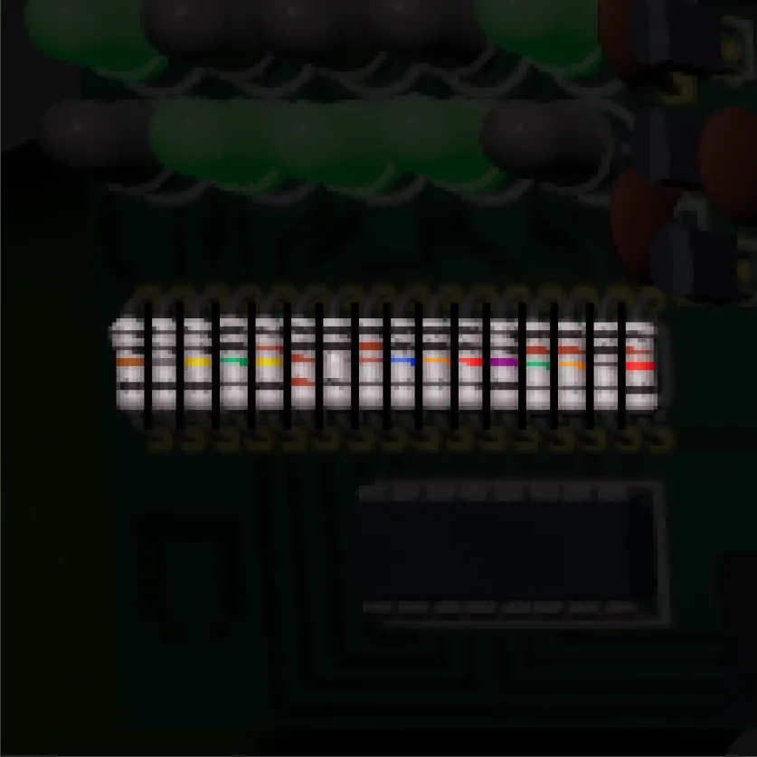
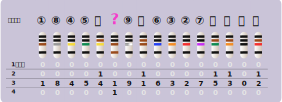
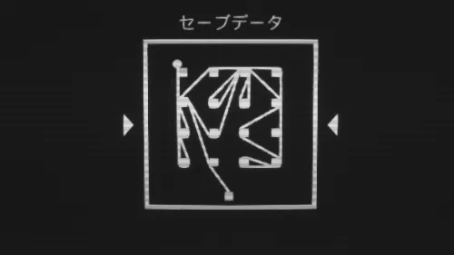

Fillament 攻略ガイド > 104 - エアーロック
104 - エアーロック
ジュニパー「アラバスター号の中で最初に乗った場所」
右側に続く、ふたごの小部屋がエアーロックの扉らしい。ピスタチオと一緒に荷物を積み込んだ思い出を披露する。
「任務に就くまで知らなかったが、実はピスタチオは近所に住んでいた」
- 謎 1 - 白い端末
- 謎 2 - 部屋
- 謎 3 - 白い端末 2
- コレクション 1 - TCGカード
- コレクション 2 - アーカイブ
謎 1 - 白い端末
謎 2 - 部屋
コレクション 1 - TCGカード
コレクション 2 - アーカイブ
謎 3 - 白い端末 2
ナゾはどこ？
白い端末。
付箋にマークがあるが、よく見ると左のLED機器にもマークがある。
close
ヒント
LEDの下の抵抗器に注目。 ちょうど16個あるようだ。
close
くわしい解き方
抵抗器に4本の色つき帯がついている。
カラーコードといい、抵抗値を色で表すものらしい：

色と数字の対応はこちらを参考にした： 抵抗器のカラーコード計算機
では、謎をよく見てみよう。
わかりやすいようカラーコードを図にしてみた：
抵抗器は一般的に、少し離れた帯が右端になる。
この向きで抵抗値を計算しようとしたが、どうもうまくいかない。
-
黒黒青黒、黒黒黄黒、黒黒緑黒、とかけ算の帯がカラフルになる。 しかし、黒黒（00）に何をかけても答えは0。 0がたくさん並ぶことになってしまう。
-
ひとつだけ、誤差の帯が茶色。 「±1%」の意味だが、値としてどう捉えればいいのか。
-
実際の抵抗器は、両端が黒にならない。
ということで、抵抗値を計算するのではなく、あくまで色と数字の対応のみ参考にすると考えた。
色を数字におきかえると：
0から小さい順に番号をつけていくと、どうやら答えらしくなってきた。
ここでわからなかったのが 黒黒茶茶の扱い。
ぶっちゃけ、いろいろ試したらこれが10番目にくるのが正解だったのだが、理由を考えてみる。
-
もしかしたらこの抵抗器は4バンドではなく、5バンドなのかもしれない。
-
1-3ケタ目が数値を表し、4ケタ目がかけ算なのか？
⋯⋯ということで、やっぱり計算は必要だった説。
図にすると：
16進数になおして：
1845 ea9b 6327 fd0c
もっとスマートな解き方があるのかもしれないけど、私はこう解いたよーということで。
試行錯誤の跡でした！
close
答え
1845 ea9b 6327 fd0c
close
解除されるログ
損害 > 人間の経験の面では....
close